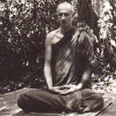

|
 |
Venerable Puriso (Bruce Evans) was born in Melbourne, Australia in
1951. As a young man he became involved in the music business and made
a record. Through contact with a Zen teacher in Melbourne he was inspired
to go to Japan to study Zen. |
|
In the meditation monasteries of North-East Thailand it is a tradition
for the village people to spend the new moon and full moon uposatha
days in the monastery. They keep the eight precepts and practise meditation
alongside the monks and nuns until dawn of the following day. On such
evenings a Dhamma talk is given especially to encourage laity. The following
talk, translated from the Thai by the speaker, was given by Venerable
Puriso during the Rainy-Season Retreat (Vassa) of 1987. FOR YOU WHO HAVE COME TO THE MONASTERY, leaving your homes for the observance day, it is a good opportunity to stop and reflect on your lives. Where are you going? Are you travelling the worldly path or the path of Dhamma? If you are travelling the path of Dhamma, are you making progress? In the practice of Dhamma, one should constantly try to improve oneself; don't just go about things in a perfunctory way -- move ahead. To make the Dhamma meaningful, you have to make it relevant to your life, reflecting on your actions in the light of Dhamma. For example, when developing sati, recollection. In any one day, how much time do you spend with sati, being aware of yourself? We develop sati in our meditation practice. At first, one may only be able to keep one's attention on the breath for two or three seconds before it wanders. Especially if you don't establish your mind when sitting, you may not even follow the breath for even two or three seconds. You may end up just sitting there, passing the time away. When sitting in meditation, you should really, consciously, sit in meditation. What is our task when sitting meditation? We must bring the breath to mind, to recollect on, contemplate around, or notice the in- and out-breaths. This is developing the ability to recollect or be mindful -- sati. Using repetition, we can improve our ability in this area. With all the practices in the forest monastery here, there is room for improvement and refinement. What are our practices here? Firstly, for instance, there is eating one meal a day. This is one of our basic practices. In forest monasteries this standard should be observed firmly. Another one is the practice of not lying down in the evenings of the observance days. For those who have the strength, this should also be observed -- although if one's health is not good, one may not be able to go all through the night. Even so, one can still make the effort to be especially diligent on that night. Listening to Dhamma is another one of our practices. Listening to Dhamma is something one must train in. If one has never listened to Dhamma, one won't really know how to do it. One's mind will wander and one will get caught up in thoughts of criticism or praise, approval or disapproval, and so on. As for those who have trained in listening to Dhamma, when they hear the Dhamma they feel pleasure. Likewise, if we can practise the Dhamma in our everyday lives, we should experience lightness and ease as a result. We should experience the 'disbanding' or 'dissolving' of suffering. The suffering of this world arises through clinging and attachment. The world is the sphere of 'me' and 'mine'. Now in this world there are many people, so it's necessary to share things around. But in fact, there isn't much sharing, there's more grabbing going on. People are struggling against each other to make a living, raise a family, set themselves up securely, and so on. In other words, they're suffering. Generally speaking, people manage to get by, but there are times when things get rough, problems arise in the form of disputes, quarrels, fighting, and so on. It's just as if people were blinded by darkness. So what should we do? We must listen to the Dhamma, contemplate the Dhamma. We must learn to look at all these things in the light of Dhamma, bringing light into our minds. When you bring light into a dark place, the darkness disappears. No matter how long the darkness has been there, it dissipates the instant we bring light into that place. The 'light' here is the understanding of things in the light of Dhamma. What is the light of Dhamma? When we know how to let go of 'me' and 'mine', and see things as they are -- this is seeing things in the light of Dhamma. For instance, in Buddhism we talk about the 'Eight Worldly Dhammas': gain and loss, praise and criticism, fame and obscurity, happiness and suffering. These are the things most people are running after or from. People look for wealth and possessions. Praise is another thing people look for. We like to hear people say we are good and clever. Words like that please us. If we hear words of criticism or abuse, we don't feel so good. Another kind of worldly Dhamma is status. Some people aren't so interested in wealth as such, but they like rank and power. Politicians may spend lots of money to get political power and position. If we look into all these worldly Dhammas, we will notice that they all tend to swell up one's self-image. However, the practice of Dhamma tends to work towards cutting it down, towards giving up pride. 'Self building' is contrary to the way of things, because in the end we lose all those things anyway. I've noticed the monkeys here in the forest. Sometimes I've seen them playing a game, something like 'King of the Castle'. One of the monkeys will run to the top of a termite mound. He's the King of the Castle. Then all the other monkeys down below will compete with each other to pull him down and get up there themselves. All of the monkeys want to get on top, they want to be big, they want to show their stuff. But being on top doesn't necessarily guarantee happiness. In fact, the monkey on top of the mound suffers more than all the others. He's got to be constantly on guard against the other monkeys jumping up and pulling him off the mound. The others are much better off, they've got nothing to lose. There's something we can learn from this, too. 'Make yourself small.' To say 'Make yourself small' doesn't mean to make yourself stupid, lazy or cowardly, but to know how to let go: to be humble, respectful, easily contented and appreciative. These four qualities are contrary to the normal way of the world. In the world, people don't usually aim for these sorts of things -- they normally seek to make themselves big. The Buddha said this is contrary to nature. So whatever practice is a vehicle to help us let go of 'me' and 'mine' is a correct practice, as well as being the way to happiness. This is because letting go is happiness; clinging is suffering. Regarding this point here, one who has never studied or thought about the Dhamma won't like to hear it, because most people tend to cling. There are many things people cling to as being their own. Seeing things as being one's own in an absolute sense is called 'clinging'. If one isn't clinging, one will see that 'our' things are ours only in a relative sense. As long as supporting conditions are there, then those things will also be there; but when supporting factors no longer exist, then those things also cease. Thinking in this way is thinking in the light of Dhamma. And thinking in the light of Dhamma will make us cool and peaceful; we will experience the disbanding of clinging. When clinging is disbanded, we will experience lightness. That we come to practise in the monastery is not so that we can simply run away from home, but so that we can step back a bit from our everyday lives and look at things more clearly. If we were to practise only at home, there would be difficulties. One might feel embarrassed to sit or walk meditation. But all of you who come to the monastery come with the single intention of studying and practising the religion. So you can all relax. If somebody wants to practise walking meditation, that person won't have to feel embarrassed or afraid that people will look askance at him, because walking meditation is one of our duties here. If you tried doing walking meditation in the market place, they might think you were crazy, and lock you up! So we come to practise in the monastery where we can relax, practise meditation, read Dhamma books or simply spend the day quietly. Keeping the precepts is already a meritorious action, because actually it's quite difficult to do, especially the eight precepts. If one keeps the eight precepts, one is living like a renunciant, especially here in this monastery where it's very peaceful, and removed from the bustle of house hold life. Living here for a day and a night is like ordaining for a day and a night. If you were to try living like this at home, it wouldn't be easy -- sounds of radio, television, people coming and going -- these things don't help meditation practice. However, having come to stay here, we should look into suffering. There will be suffering arising within our bodies and minds. Our duty is to understand the truth of suffering. What does suffering arise from, how does it arise? We must study these things. The Buddha taught, 'Suffering is something that should be recognised,' but most people don't want to recognize it. If suffering arises, the only thing they can think of doing is to try to run away from it. They don't want to look into it. They are not real Dhamma practisers. A Dhamma practiser must look into problems as they arise in order to understand their causes. Sometimes, some incident may arise which we instantly react to -- for instance, when people criticise us. But if we look into what they say, we may find some truth there. Our getting angry was simply a defence-reaction based on fear. If we accept what they say, that is, we recognise their right to say what they wish, then no incident arises. If we practise so as not to give rise to any 'incidents' in our lives, we will have some peace. If any incidents do arise, we dare to look into them in the light of Dhamma, with openness, clarity and honesty. But seeing things in the light of Dhamma is not easy. We have our habits. This is what makes seeing in the light of Dhamma so difficult. We see things not as they are but coloured by our habitual reactions and value judgements. We must depend on Dhamma practice to further train ourselves. We must develop moral discipline (sila) and mental discipline (samadhi) in order to give rise to understanding (pañña). Sila and samadhi are the tools with which we calm our actions, speech and thoughts. If our actions, speech ;and thoughts are not restrained, everything is agitated, we can't see things the way they are. In other words, we can't see in the light of Dhamma. We must firmly take hold of the practices which the Buddha has bequeathed us: moral precepts, the dhutanga practices, making merit and giving offerings; these are all tools in our practice. They give us the strength to overcome the hindrances and develop clarity. How can we give up hindrances? Take the example of giving offerings. Whether offering of material goods or offering of one's time and energy, these are all aspects of dana, and they are one way of giving up mental hindrances and cleansing our mind. Don't think that making offerings is in order to go to heaven. That's not a sure thing. If one makes offerings and yet does bad actions, one may end up going to hell. Making merit through good deeds ;and making offerings are done in order to cleanse one's mind. You can see the fruit of your action in the present moment, you don't have to go looking off into a future life. Future lives are an uncertainty, we should consider this life. If you give offerings wholeheartedly, without a trace of doubt or regret, giving fully with one's whole heart, one will experience happiness right there, a sense of well-being and fulfilment. Right there is the fruit of giving, you don't have to look for it in the future. Keeping the precepts is the same. If one keeps the precepts wholeheartedly, without doubts on one hand or self-pride on the other, one will experience a feeling of strength in one's heart. The mind will be firm and strong. If one takes such a mind and trains it further in concentration practice, that firmness will increase until the mind becomes unified. This is our path of practice. This is how the forest monasteries teach the Dhamma. They teach us to practise the Dhamma, to actually put it into practice, to the best of our ability, and to see the fruits of the practice in the present, right before your eyes. For instance, if you practise meditation and calm the mind, the fruit of your efforts will be plainly there before you. You don't have to think of practising meditation for some future result, you can see the fruit right there. Goodness is its own reward. This point is one that people don't seem to understand. They see people going to the monastery for years and never getting rich, so they conclude that they've done good deeds and received no result. This is a misunderstanding. If one really does virtuous deeds, there must be virtue within one at that time. The fruit of the action is right there within one. The same applies to bad actions. Sometimes we may see others doing bad things and seeming to get away with it, and so conclude that they've done bad actions and received no bad result. This is still not seeing clearly. In Buddhism we say, 'Good actions bring good results, bad actions bring bad results.' This isn't a theory, an idea, an ideal, or some form of wishful thinking -- it is the way things are, whether one sees it or not. People who commit evil acts become evil people. Their minds, their speech and their actions become evil. This is the result of their evil actions, in keeping with the Buddha's instruction, 'We are the owners of our kamma.' Moreover, good and bad actions reap future results as well, such as when a thief steals something. At the time of stealing, he may even feel pleasure of a sort -- even if it is a shoddy sort of pleasure -- and it may last for many days. He may get a lot of money and spend it lavishly, but when the police catch him, all that pleasure he experienced is as nothing -- it disappears without a trace -- leaving him alone with the consequences of his actions. This is the fruit of bad kamma. If we really practise and contemplate, we should see that this is so. When I went to Australia with Ajahn Jagaro, the day we arrived at Perth Airport we were approached by a man as we were going through Customs. He was a little drunk, but he must have been something of a philosopher as well. Seeing us monks aroused his curiosity, so he came to ask about our religion. We told him we were Buddhists. 'Oh, Buddhists. You revere the Buddha, is that right?' I answered, 'They both died, it's true, but it wasn't the same thing. The Buddha understood death. He lived his life fully aware of the fact of death and was unshaken by it. When the time came for him to die, he died peacefully, without doubts, without regrets, having lived a 'true' life, one that was lived in accordance with the truth. 'Hitler, on the other hand, didn't understand death. His life was lived with fear and suspicion, his mind was wrought with untold sufferings and a view that was ignorant of the truth, which is why he could commit such evil actions anyway. His life was lived out of fear, and he died in confusion and darkness. His life was full of ignorance and falsehood. This is the important difference: one of them understood, the other didn't.' This is the important point. We Buddhists should have this understanding in our hearts. What does 'Buddha' mean? Buddha means 'knowing', Buddho means 'the one who knows'. This Buddhist Religion is the religion of knowing and understanding the way things really are. Now, the knowledge of the Buddha and the enlightened disciples is not the knowledge of so much -- it's basically to know oneself. If you want to be a true Buddhist, you must cultivate that knowing in your heart. This knowing is not like worldly knowledge, which is an amassing of facts and ideas. It is simply to know ourselves. If you know how to practise like this, then it's just like planting a Bodhi-tree in your mind. All the bad, unwholesome qualities will be like fertiliser to feed the Bodhi-tree, the tree of knowing. You will be able to use the defilements of mind as objects of awareness, as vehicles to see the true state of your mind, and seeing the true state of greed, hatred and delusion. For example, if you happen to get angry, then know that anger has arisen. Don't fool yourself by saying, 'No, I'm not angry, it's just that so-and-so is such a dirty rat....' Sometimes when we are angry, we fail to recognise it because we put all our attention onto the object of anger rather than on our own minds. We are always watching others, rarely ourselves. The Buddha said that, no matter what happens, accept it and investigate it. Such as when anger arises: know that this is anger and investigate it. How does it feel to be angry? Do you feel happy when you're angry? If you do this, then you are looking at things in the light of Dhamma. Eventually you will learn to let go of anger, because you will know that it causes suffering. If it causes suffering, why cling to it? But this is easy to say ... hard to do. Even so, listening to a discourse can remind us of our direction and encourage us to practise. If we practise hard not to get deluded by the conditions of mind, then we are behaving as real Buddhists. * * * * * * * * * * * * * * * * * * It hadn't rained for many days. Walking around, I saw the forest parched, some trees seemed to be dying. Now that it's rained, the frogs are all out revelling in the water. They find themselves a puddle, and croak away so happily -- they probably think those puddles are always going to be there. But when the rain stops in no long time they will all dry up, and the frogs will be dying of the heat. Our human lives are similar. When conditions are conducive, we are able to live fairly comfortably. When conditions change, we may not be able to continue. These days, people seem intent on destroying nature. They don't seem to realize that human beings are parts of nature, born of nature, just like those frogs. If human beings destroy nature, it is just like destroying themselves -- because we don't exist separate and above nature, we live dependent on it, as part of it. Destroy nature and we destroy ourselves. So, on that note, I'll finish off the Dhamma talk. I hope that some things I've said may be of use. At least you may have some good food for reflection, so that you take what you've heard and examine it, using it to develop your own wisdom. |
| Home Page |